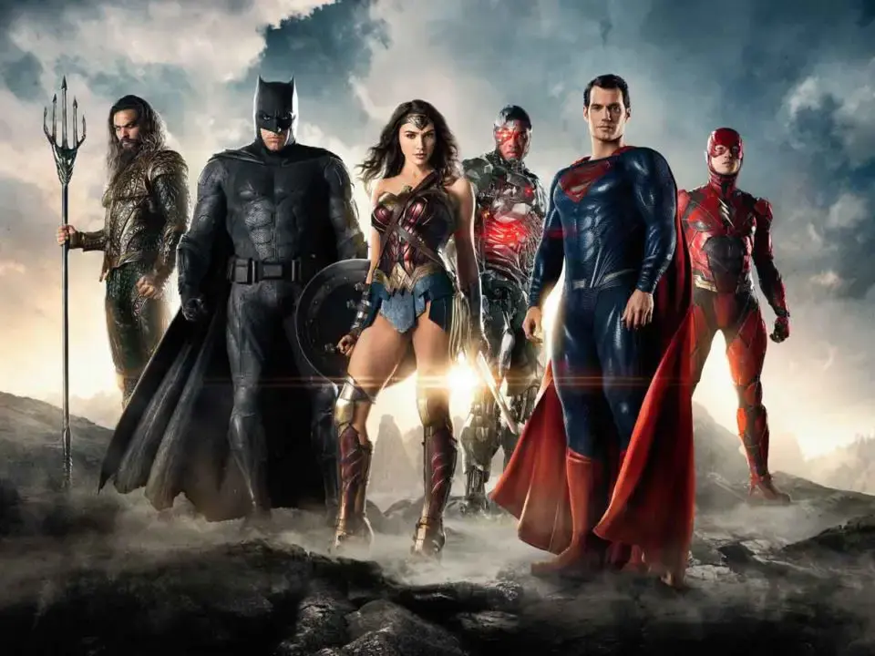

Liga de la Justicia está impactando tanto que han decidido ir a lo grande
La nueva versión de Liga de la Justicia de Zack Snyder podría tener más entregas y convertirse en una trilogía en HBO Max. Desde hace un tiempo, le han permitido a Zack Snyder terminar su versión de la Liga de la Justicia que se estrenará en 2021. Pero como está gustando tanto el resultado a los directivos de HBO Max, puede que se convierta en una trilogía. Hay que recordar que inicialmente Zack Snyder tenía planificada una historia de la Liga de la Justicia que se estrenaría en dos películas. Una en 2017 y la otra en 2019. Obviamente eso no pasó nunca, ya que el director dejó el rodaje a mitad por la muerte de su hija y Joss Whedon acabó la película con un resultado decepcionante. Ahora Zack Snyder está terminado su versión, pero seguirá quedándose con muchos cabos sueltos. Por lo que dejará la sensación de que hay mucho más potencial en estos personajes unidos. Por eso quieren hacer una trilogía para HBO Max.